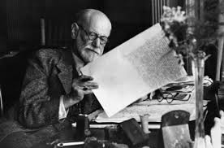

푸른숲 심리상담센터
Url : http://www.seeugreen.com
Tel : 02-597-2003
한국상담학회 연수기관 인증. 푸른숲 심리상담센터에서 교육을 받으면 상담학회에서 인정됩니다. 전문성을 겸비한 전문가 양성에 힘쓰는 곳. 석박사 전문가들이 함께하는 곳. 교육프로그램(MMPI세미나), 교육(임상심리사 자격증 과정)제공
허그인
Url : http://www.hugin.co.kr
Tel : 02-568-6255
전국 어디서나 찾을 수 있는 성인심리 상담소. 서울,경기,경상,전라 등등 전국에 상담소 위치.성인심리센터. 성인상담, 양육상담, 심리검사,치료,코칭 프로그램등 다양한 프로그램 제공
마음샘 클리닉
http://www.kidmind.co.kr/kor
Tel : 02-522-6836
마음샘 정신과는 1997년 설립된 이후 영, 유아 및 소아, 청소년,성인에 이르기까지 사람이 살면서 겪게 되는 여러가지 문제들을 함께 해결해 나갑니다. 소아/청소년 프로그램(ADHD.틱 등) 성인 프로그램(성인 ADHD,공황장애 등), 온라인 상담 제공
서연 심리상담 연구소
http://www.seoyoun.net
Tel : 02-324-2434
사람을 변화시키기보다 제대로 이해하고 공감하는 것을 목적으로 하는 곳. 내담자의 마음이 머물 수 있는곳, 상담자들의 지혜가 싹틀 수 있는 곳. 아동,청소년,성인 상담 프로그램 제공. 심리평가와 더불어 교육,연수 프로그램 제공
세인 임상심리 연구소
http://www.seinpsy.com
Tel : 02-6287-1275
세인 임상심리 연구소는 심리학적 전문 지식과 임상 경험을 바탕으로 심리적으로 건강한 삶을 원하는 분들을 돕기 위한 곳입니다.심리상담,심리검사,교육,자문 제공

서울정신 분석상담 연구소
http://www.psychoanalysis.co.kr
Tel : 02-592-4530
정신분석 심리치료 및 상담의 임상 현장 실습과 훈련, 정신분석 심리치료 사례연구 및 다양한 연구와 학술 활동을 통한 정신분석학 발전 도모하는 곳. 정신분석프로그램,개인,집단치료 프로그램, 심리검사 제공
심리플러스 상담센터
http://www.psyplus.co.kr
Tel : 02-577-0606
심리플러스 상담센터는 임상, 상담심리학과 긍정심리학을 기반으로 심리상담, 심리평가, 리더십향상프로그램 및 상담자교육을 담당하고 있는 전문기관이다. 심리상담,심리평가 ,리더십프로그램, 수퍼비전,워크샵 등 전문교육 프로그램 제공
마음사랑 상담센터
http://www.maumsarang.or.kr
Tel : 02-511-4410
마음사랑상담센터는 심리학자들이 운영하는 전문 심리상담기관. 심리학의 과학적 지식과 다양한 현장에서 얻은 전문적 경험을 바탕으로 많은 심리적 고통과 어려움에 도움을 주는 것을 목표로 하는 곳. 성인,청소년 상담 ,교육 및 워크샵 제공
마음사랑 인지행동 치료센터
http://www.cbt.or.kr
Tel : 02-511-4411
마음사랑 인지행동 치료센터는 인지행동치(Cognitive & Behavioral Therapies) 를 지향하는 임상/상담심리학자들이 운영하는 전문 심리상담기관. 인지행동치료 전문, 심리검사 , 성인; 청소년 클리닉, CBT교육수련 제공
심리상담 연구소
http://www.ypcskorean.com
Tel : 02-6929-3014
You&Me 심리상담연구소는 자기자신에 대한 이해를 높이고, 온전한 관계를 지향하며, 자신이 지닌 잠재력을 충분히 발휘하고자 노력하는 분들을 돕기 위해 만들어진 곳. 개인 아동 커플 집단 상담 제공 , 다양한 카테고리를 통한 구체적인 상담 예약 서비스 제공